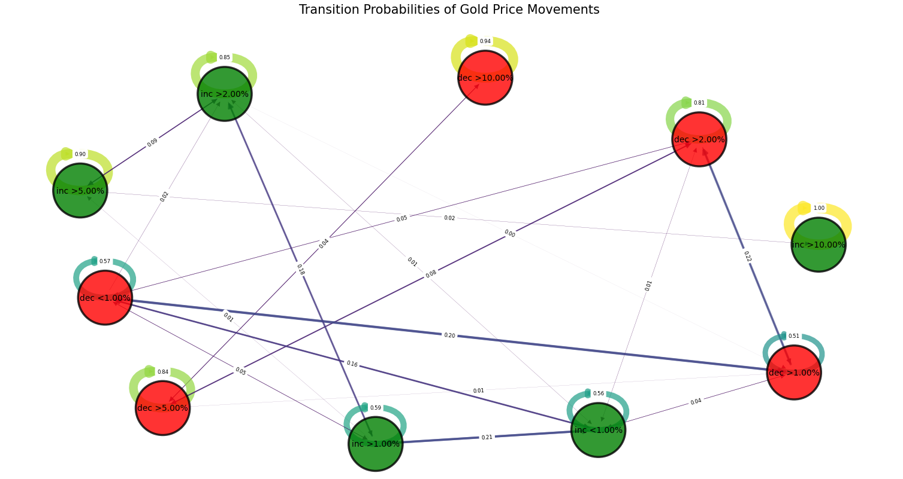

Quantitative algorithms have always blown me away, being able to create a system that can consistently outperform the most informed stockbrokers, with all their financial incentives is such a beautiful picture. A picture I always wanted to be a part of.
The following alogorithm isn’t complex and I’d highly recommend any experienced trader to go through my program and give criticism on some factors I may have overlooked. The implementation is truly trivial with lots of room for improvement which I plan to cover in the next few months.
The inspiration that I could develop such a tool for analysis came from a reel, explaining about how most of the algortihms function, Markov Chains, a tool also used to predict weather. It truly is a simple, yet marvellous method, by creating a ‘chain’ where one days weather leads to the next using a few factors.
So given the high and low temperature, the air pressure and the humidity of today, what is the probability of rain tomorrow? Well just look at past data, and see the days we had the exact same states, and count the number of times it was followed by a rainy day, now divide that by the total number of times the state is observed in past data, and you have successfully developed a Markov chain.
Now the program only looks at the closing prices, and since I failed to find any minial library to develop the Markov chain and transition matrix necessary for the algorithm, I decided to create them myself, leading to the rather simplistic implementation.
I partitioned the price movements into a set of different states based on the size and direction of its change. These states were:
• Significant Upward Trends: `inc > 5%`
• Strong Upward Trends: `inc > 2%`
• Moderate Upward Trends: `inc > 1%`
• Slight Upward Trends: `inc < 1%`
• Slight Downward Trends: `dec < 1%`
• Moderate Downward Trends: `dec > 1%`
• Strong Downward Trends: `dec > 2%`
• Significant Downward Trends: `dec > 5%`
Then, I created a transition matrix below, where each row represents the current state, and the columns represent the states. Cell i, j contains the transition probability from state i to state j. From this matrix, we can infer something about the probabilities of future price movements.
To make the insights more accessible, I applied the power of data visualization. Using the NetworkX library, I designed a directed graph where nodes represent states and edges represent the probability of transitioning between states. The thickness and color of the edges visually convey the strength of the transition probabilities.

The graph above helps visualise the transition matrix, with each state represented as a node, and the width of the arrow corresponding to the relative probabilites of the transition from the inital state to the next
Analyising the data, also reveals several interesting patterns came up:
• Persistence of Trends: A strong upward/downward trend tends to persist over many days.
• Mean Reversion: After periods of high upward or downward movements in prices, the market always tends to revert to the mean.
• Volatility Clustering: Periods of high volatility are followed by periods of high volatility, and similarly low with low.
This has genuinely been a really enlightening project, but there's so much more to explore. I will push further with the more advanced statistical techniques, such as Markov Chain Monte Carlo for modeling the uncertainty and stochastic nature of the gold price movements. Finally, I plan to add more exogenous factors-economic indicators, geopolitical events, and sentiment analysis-can help further improve the model. And also, along the way develop a library to implement Markov chains and transition matrices in an accessible and simple way.